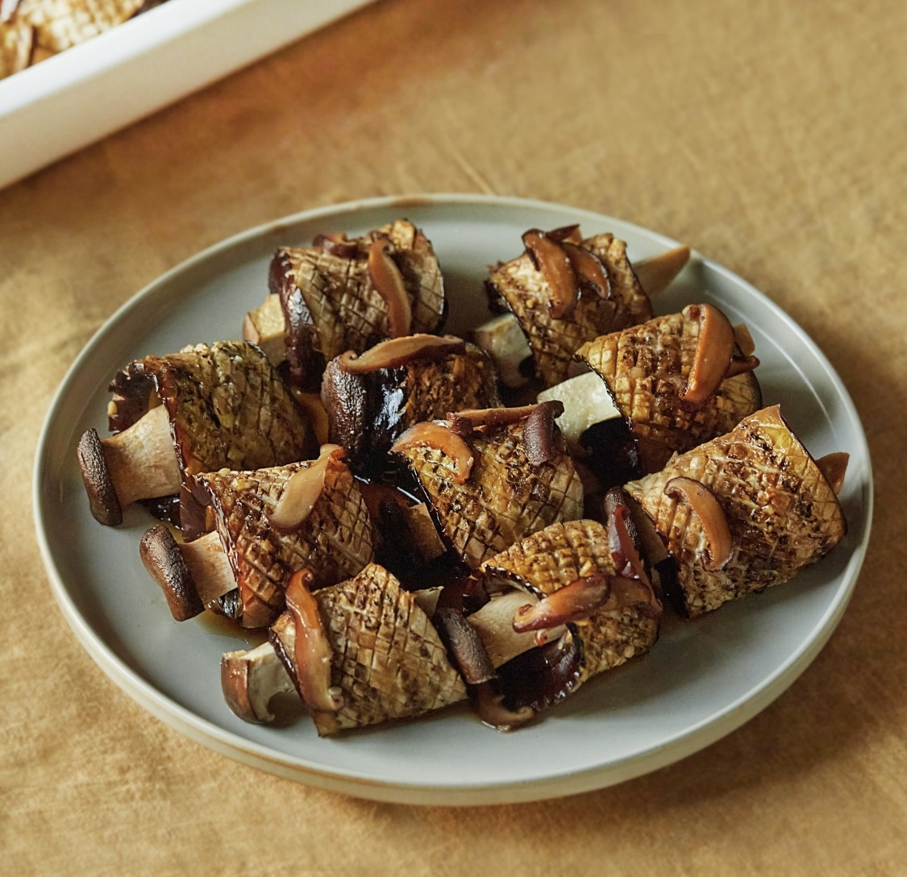
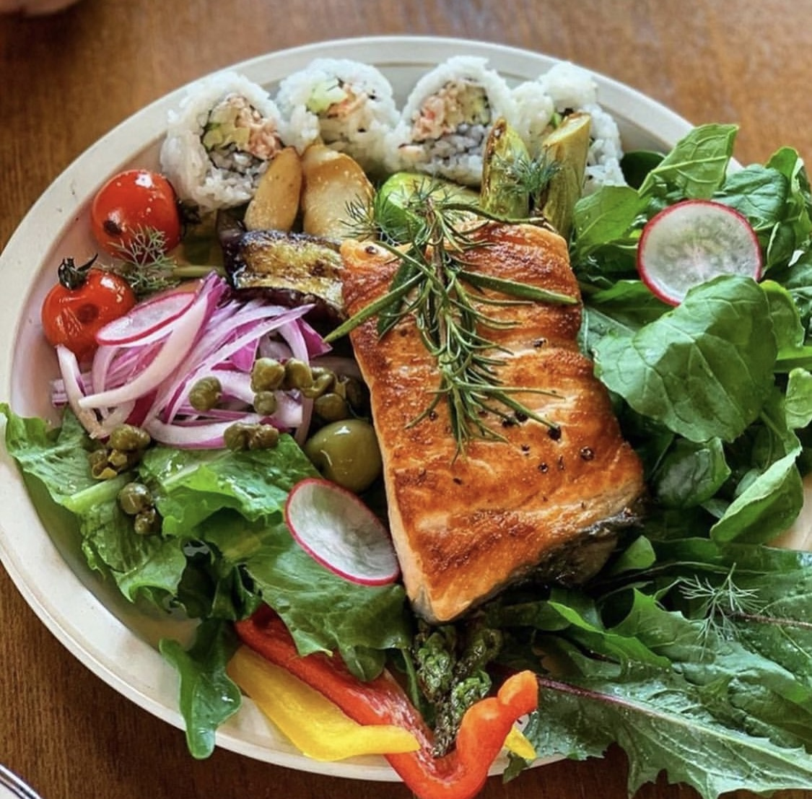
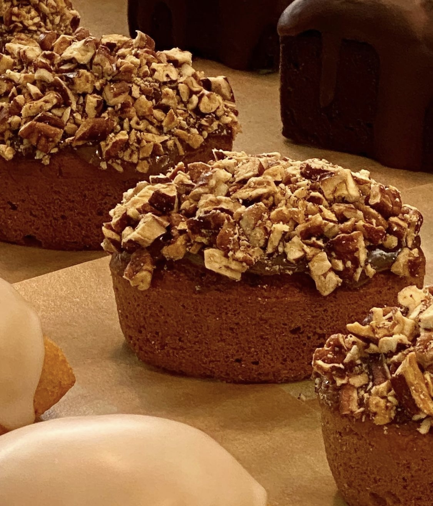
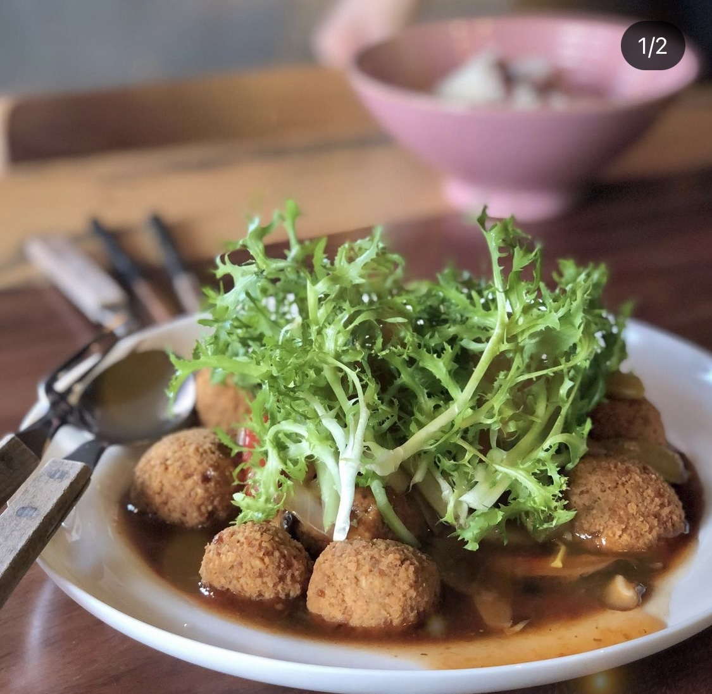

북마크
레시피
가지갈비

난이도 ★ ★ ☆ ☆ ☆
갈비보다 더 맛있는 갈비가 나타났어요!
+ 더보기
식당
다이너재키

주소
서울 마포구 포은로 82 1층
별점
★ ★ ★ ★ ☆
+ 더보기
카페·베이커리
지구제과

주소
서울 마포구 성미산로29길 30-3 1층
별점
★ ★ ★ ★ ☆
+ 더보기
리뷰
채식주의자

채식이라는 생각이 안들만큼
정말 맛있고 식당도 아기자기 했어요!
+ 더보기